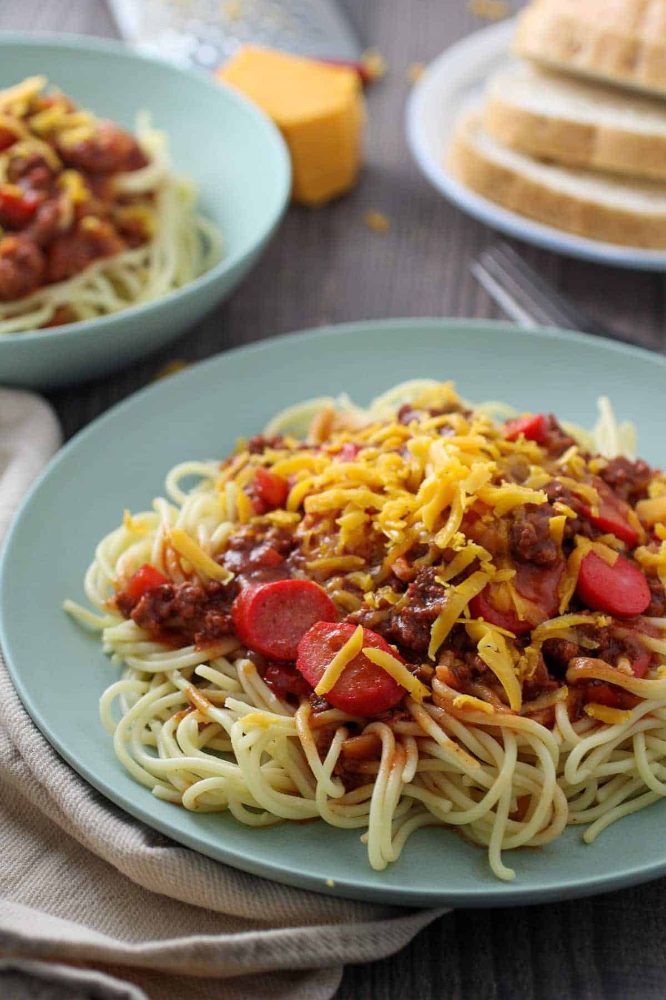

Filipino Spaghetti

A sweeter take on the Italian classic. It has all the ingredients of a regular spaghetti dish, but with banana ketchup for sweetness. You can also add hot dogs into it as well for additional meat.
The banana ketchup is delicious and tones down some of the acidity and sourness found in traditional spaghetti.
Ingredients List
- 1 cup Banana Ketchup (Sweet and Spicy)
- 1 lb. Spaghetti Noodles
- 2 cups Tomato Sauce
- 1/2 cup of tomato paste
- 1 tbsp oil
- 4 Filipino style hot dogs
- 1 Onion peeled and chopped
- 3 Cloves of garlic
- 1 Bell peper. chopped
- 1 lb. ground beef
- 1 cup beef broth
- 1 tsp sugar
- Salt and pepper to taste
- 1/2 cup shredded quick-melt cheese
Directions
- Cook spaghetti in a boiling pot of water for 7-9 minutes.
- Heat oil in a large saucepan. Cook hot dogs for 1-2 minutes until brown. Set aside when done.
- Add onions, bell peppers, and garlic to the pan.
- Add the ground beef. Break it into small pieces and allow to brown. Drain the excess fat.
- Add tomato sauce, tomato paste, banana ketchup, and beef broth. Stir in the sugar.
- Bring the contents of the saucepan to a boil then lower the heat to simmer for an hour or until the meat is fully cooked. If the sauce is too thick, add water.
- Add the browned hot dogs and season with salt and pepper.
- Serve with spaghetti sauce and noodles. Sprinkle shredded cheese on the top of the dish.